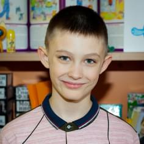

НАШИ ДЕТИ
-
КИРИЛЛ
ДЕНЬ РОЖДЕНИЯ:Характер у Кирюхи далеко непростой — бойкий, одновременно капризный, хулиганистый и задиристый. У мальчика была совершенно другая жизнь, кардинально отличающая от жизни в нашем центре, к которой он адаптируется в настоящее время. Сейчас малыш привыкает к распорядку и режиму дня, который ему не очень нравится, к регулярным занятиям с педагогами, которые для него в новинку, учится общаться со своими сверстниками. Еще мы заметили у Кирилла большую страсть к пирамидкам и конструктору, он часто пытается собрать что-то из деталей, а его любимое лакомство — это молоко.
-

ВЕРА И НАДЕЖДА
ДЕНЬ РОЖДЕНИЯ:Много детей — это счастье, умноженное в разы! А еще большое счастье, это когда ты можешь прийти на помощь в тот самый нужный, очень нужный момент, когда уже отчаялся и опустились руки! Хотим вас познакомить с новыми нашими воспитанницами- Вера и Надежда! Две очаровательные малышки, двойняшки, 4 года. «Домовята» поддержали одинокую маму, которая переживает не самые легкие времена, где оказалась без помощи и поддержки. К счастью, в этой истории мама девочек любит своих детей и очень в них нуждается. Никто из нас не застрахован от сложной жизненной ситуации. Надеемся на благополучное возвращение девочек в семью. А мы, в свою очередь, будем рядом!
-
НИКИТА
ДЕНЬ РОЖДЕНИЯ:Несмотря на то, что Никита долгое время жил в другом городе в церковно-приходском приюте для мальчиков, который в дальнейшем был расформирован, мальчик сохранил позитивный настрой и большую веру в добро. Никита обладает командным духом и является большим заводилой для ребят. Любит читать книжки и ему очень нравится играть в футбол. Как говорит Никита, сейчас он обрел настоящую большую семью!
-
ПОЛИНА
ДЕНЬ РОЖДЕНИЯ:Полина попала к нам из многодетной семьи, где в однокомнатной квартире проживают пятеро детей, и условия не позволяют находиться там дальше. На данный момент отец семейства несет службу на СВО. На фоне всех событий и переживаний мама не справляется со сложившейся трудной ситуацией. Со своей стороны нашим центром оказывается вся необходимая помощь и поддержка.
-
ВИКТОРИЯ
ДЕНЬ РОЖДЕНИЯ:Несмотря на небольшой возраст, девочка видела уже немало — столкнулась с аморальным поведением родителей, гибелью отца и безответственным отношением родных. Виктория потрясающий ребенок, проявляет себя как большая хозяйка, очень добра и отзывчива к ребятам, всегда готова прийти на помощь и поделиться своей игрушкой. Виктории очень нравится красивые аксессуары , такие как блестящие заколки и ярке ободки.
-
АНЯ
ДЕНЬ РОЖДЕНИЯ:Это самая добрая, милая и улыбчивая девочка. Ценит дружбу и с удовольствием делится своими подарками с другими детьми. Любит дегустировать разные блюда, обожает фрукты, особенно яблоки. Научилась кататься на велосипеде. С самого детства любит красивые наряды и вспышки фотокамер. На занятиях с педагогами проявляет себя как ответственный ученик. Аня постоянно напоминает своим педагогам о том, что она скоро пойдет в школу и будет учиться только на одни пятерки. Несмотря на свой юный возраст, девочка видит себя в будущем в роли воспитателя. А сейчас Анечка учится считать и читать.
-
КИРИЛЛ
ДЕНЬ РОЖДЕНИЯ:Самый самостоятельный и хозяйственный мальчишка из всех наших малышей! Всегда ходит по дому с чемоданом инструментов на тот случай, если где-то что-то сломается. В карманах вместо шоколадки Кирилл предпочитает носить отвертку. Несмотря на свой небольшой возраст, мальчик всегда имеет свое мнение и может сделать замечание, если считает, что кто-то поступает несправедливо. В свободное от ремонтных работ время Кирилла увлекает игра в железную дорогу и строительство пирамидок.
-
АНТОН
ДЕНЬ РОЖДЕНИЯ:Антошка самый непоседливый малыш. Если его вдруг нет в кроватке, то ищите дорожку из книг, которую он выложил сам, чтобы спрятаться в шкафу и полистать картинки. Мальчик очень любит подвижные игры, машинки, прогулки на природе. Любит от души посмеяться и погримасничать.
-
КРИСТИНА
ДЕНЬ РОЖДЕНИЯ:Кристина — милая, застенчивая и добрая девочка. Особую радость ей доставляют танцы, настольные игры и участие в спортивных мероприятиях. Уже сейчас она делает первые успехи в прыжках в длину. Учится кататься на скейтборде, играет с мальчишками в футбол и мечтает научиться кататься на роликах. Кристина учится уже в третьем классе, и, как истинная леди, предпочитает пышные юбки и собранные в косу волосы.
-
ХАСАН
ДЕНЬ РОЖДЕНИЯ:Очень энергичный и подвижный мальчик, который любит танцевать лезгинку и современные танцы, слушать музыку, ходить на концерты и подпевать любимым исполнителям. Хасан сейчас учится в 4 классе, но несмотря на свой юный возраст, он как истинный джентльмен, всегда помогает девочкам донести портфели, а также принимает активное участие в помощи воспитателям. Мечтает познакомиться с признанным чемпионом UFC в легком весе Хабибом Нурмагомедовым, заняться смешанными единоборствами, стать великим спортсменом ММА, сотрудником правоохранительных органов или поваром, а в дальнейшем открыть свой ресторан под названием «Домовята».
-
ДАША
ДЕНЬ РОЖДЕНИЯ:Даша учится в 8 классе. Её главный девиз: «Помочь всегда, помочь каждому!». Даша увлекается аниме и рисует любимых персонажей. Свои лучшие рисунки она старается применить в украшении интерьера, а красочные плакаты дарит своим друзьям. Одно из любимых хобби Даши — выращивание цветов. В ее комнате целая коллекция цветов, за которыми ей нравиться ухаживать. Но больше всего Даша интересуется профессией «Учитель изобразительного искусства» и перенимает опыт у своих наставников.
-

ДАНИЛА
ДЕНЬ РОЖДЕНИЯ:Даня учится в 5 классе. Его любимые увлечения — разукрашивание картин и просмотр мультиков про черепашек Ниндзя. Как истинный мужчина, Данила любит вкусно приготовить и сытно поесть, особенно ему удаются заварные блинчики по собственному рецепту, которыми он угощает всех детишек. Ещё Даня проявляет интерес к языкам и техническим наукам, любит изучать сложные электрические схемы. Мечтает стать электриком или поваром.
-

КРИСТИНА
ДЕНЬ РОЖДЕНИЯ:Кристина учится в четвертом классе. Девочка уже с детства имеет манеры истиной королевы, всегда невозмутима, приветлива и добра ко всем. Ходит в художественную школу, не боится публичных выступлений. Кристина — хорошая хозяйка, всегда пытается предложить свою помощь в уборке дома и приготовления ужина для всей семьи. Невероятно любит своего пернатого друга Кешу, слушать музыку и кататься на велосипеде. Ее мечта — научиться играть на гитаре.
-
РАФАИЛ
ДЕНЬ РОЖДЕНИЯ:Достаточно скромный, спокойный и сдержанный мальчик. Учится в 5 классе. На сегодняшний день Рафаилу нравится заниматься в художественной школе, предпочитает в свободное время поиграть в пазлы и не понимает, почему многим ребятам так нравится проводить время в телефоне. А еще Рафаил часто пытается в тихий час помочь педагогам уложить малышей спать, т.к вместе с ним у нас находится его младший братик Кирилл.
-
КСЕНИЯ
ДЕНЬ РОЖДЕНИЯ:Родители Ксении много лет употребляли и употребляют алкоголь, а после смерти папы Ксении мама окончательно потеряла контроль над собой и своими действиями. Большую часть времени Ксенией никто не занимался, и девочку часто замечали на улице. Теперь Ксения в надежных руках — в руках «Домовят»! Характер у девочки непростой — Ксения является выраженным лидером и обладает позитивным настроем. Так как наша воспитанница долгое время находилась в бесконтрольной жизни и без внимания родителей, у девочки сформировались манеры, которые не применимы в большой многодетной семье. Нам предстоит большая работа.
-
СПАРТА
ДЕНЬ РОЖДЕНИЯ:Одна из самых улыбчивых малышей. Всегда находится в хорошем и добром настроении. Ни снег, ни стужа, ни ветер могучий не могут стереть с ее лица смех и широкую улыбку. За время нахождения у нас Спарта проявляет себя, как истинная девочка, всегда со всеми нежна, доброжелательна и обходительна. Но стоит ей заметить чьё-то неправильное поведение, обязательно сделает замечание и объяснит, как нужно поступать. Часто стремится помочь своим воспитателям на кухне, разложить красиво салфетки и подать столовые приборы. На занятиях с педагогами стремится взять лидерство. Проявляет находчивость и смекалку.
-
МАТВЕЙ
ДЕНЬ РОЖДЕНИЯ:Он у нас большой артист, натура впечатлительная и ранимая! Ни один концерт в доме не обходится без его выступления. Матвей читает стихи, поет песни, танцует зажигательные танцы. Поддержка публики и овации очень важны для него, они придают ему уверенности в своих силах. Матвей учится в 5 классе. Мальчик настолько многогранен, что проявляет интерес к компьютерным программам, танцует hip-hop, любит роботов и с удовольствием изучает как они устроены. В будущем мечтает стать web-программистом. А сейчас мечтает изобрести машину времени.
-
ВЕРОНИКА
ДЕНЬ РОЖДЕНИЯ:Родители Вероники ведут весьма безнравственный образ жизни, оба родителя долгое время злоупотребляют алкоголем, вследствие чего ребенок оказался социально запущенным и никому не нужным. В один из дней родители Виктории сильно выпивали и ругались, и девочка, несмотря на свой маленький возраст, не выдержала происходящее и позвонила в службу 112 за помощью.
-
СЕРГЕЙ
ДЕНЬ РОЖДЕНИЯ:Теперь в семье «домовят» проживает старший братик Зайцевой Виктории. Сергей попал к нам после скитаний по родственникам. Сначала он проживал с родной тетей, далее его отправили к старенькой бабушке. На данный момент родная мать Сергея и Виктории продолжает злоупотреблять алкоголем, а для родственников мальчик — большая обуза. Попав к нам в центр, Сергей благополучно проходит обучение в общеобразовательной школе, где учатся все наши воспитанники. А также, совместно со старшими ребятами, приступил к дополнительному обучению по изучению английского языка. В свободное время Сергей любит возиться с малышами, играть с ними в любимые игры, рисовать и во всем им помогать и поддерживать.
-
ЯНА
ДЕНЬ РОЖДЕНИЯ:У девочки умерла мама, причиной смерти было злоупотребление алкоголем. У папы тоже тяжелый диагноз, и надежды на выздоровление нет. Но, несмотря на все обстоятельства, Яна старается сохранять позитивный взгляд на жизнь, а мы ее в этом поддерживаем. Яна вместе со старшими ребятами учится в общеобразовательной школе, а также делает первые успехи в художественной школе. Мечты нашей воспитанницы самые, что ни на есть, добрые и естественные — в будущем девочка мечтает о большой, крепкой и благополучной семье, заботливом и непьющем муже и двоих детках.
-

ШОДИ
ДЕНЬ РОЖДЕНИЯ:Очень умная, красивая девочка, которая всегда готова прийти на помощь. Шоди большая кокетка, ей нравится красиво одеваться, делать необычные прически как себе, так и другим детям. Еще Шоди у нас художница — увлекается рисованием и пишет великолепные картины. Обожает уроки по балету и уличные танцы. Шоди сейчас учится в 5 классе. Девочка растет большим дипломатом — с успехом проводит любые переговоры с детьми и со взрослыми, старается соблюдать чувство такта, выдержанный тон и четкую линию поведения. На данный момент ее творческая натура не позволяет ей определиться в выборе только одной профессии, поэтому сейчас она видит себя мастером по маникюру или врачом-педиатром.
-
КСЕНИЯ
ДЕНЬ РОЖДЕНИЯ:Ксения с отличием закончила 11 классов. Поступила в ВУЗ и учится на управленца гостиничного дела, а также параллельно проходит практику в одном из заведений гостиничного комплекса. Ксения является самой старшей воспитанницей детского центра, и старается брать на себя обязанности по организации большинства праздничных мероприятий. Совсем недавно при общении с Ксюшей мы выяснили, что оказывается, она очень давно мечтает научиться водить машину. Стремление Ксюши - стать хорошим дипломированным специалистом и управленцем, для того, чтобы в будущем построить большой дом для своих родных и близких.